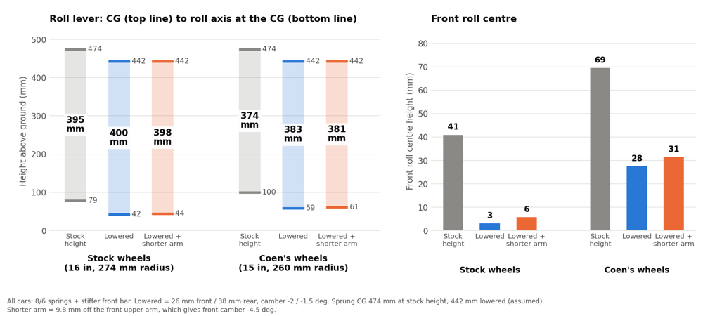
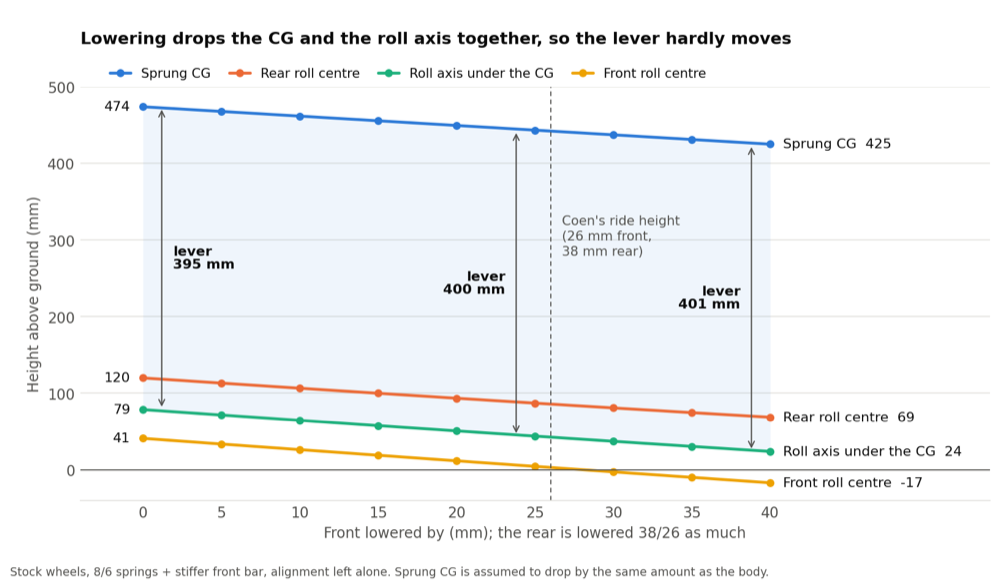
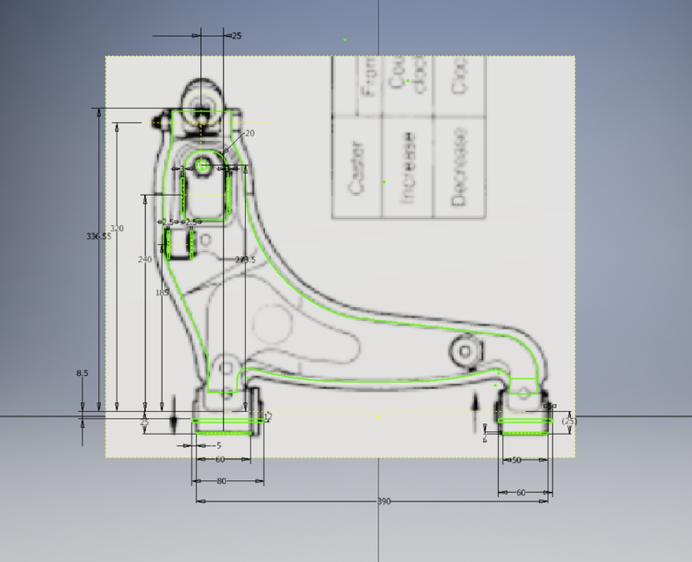
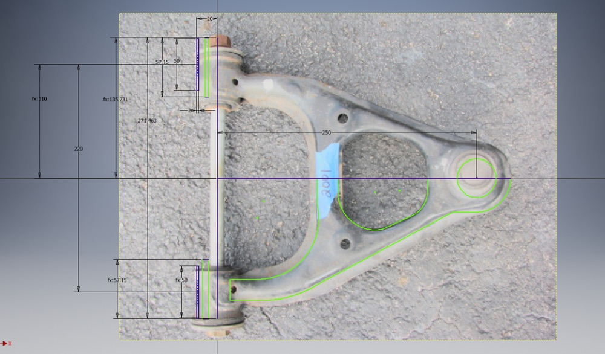
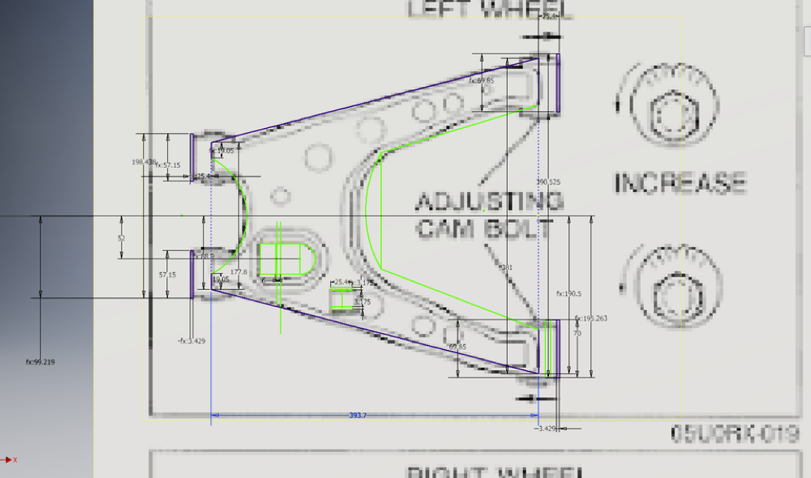
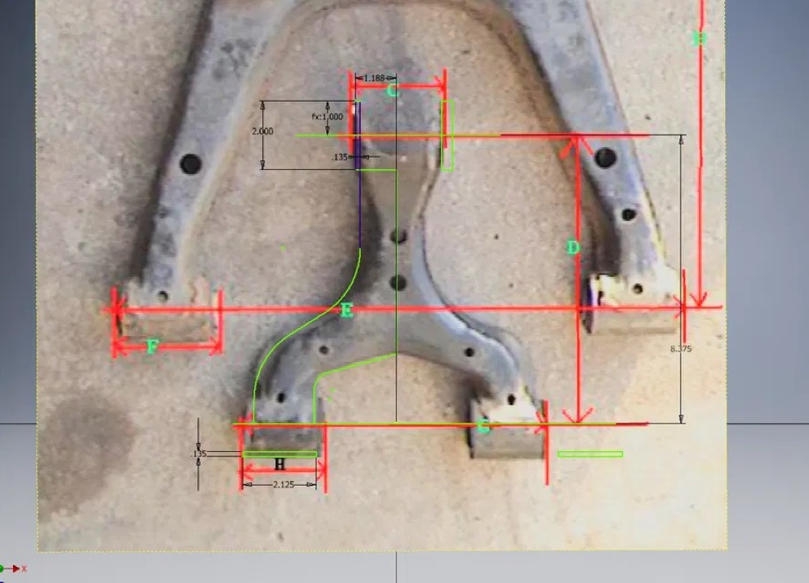
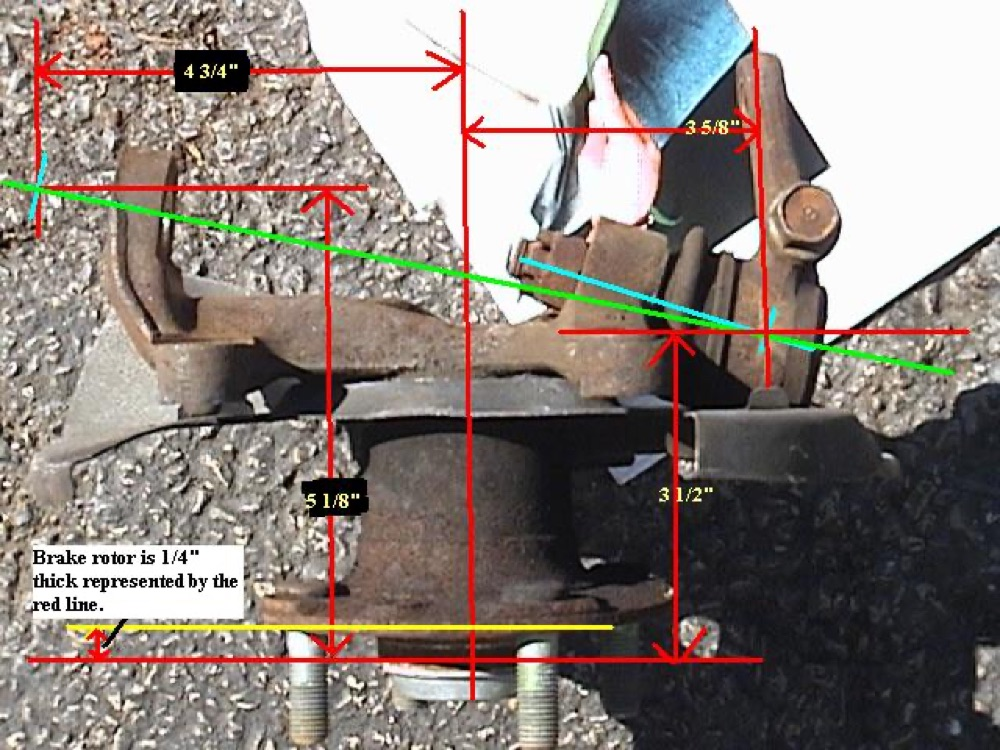

I will be using a tool I built to explore design choices on my NB Mazda Miata.
Link to tool: https://refriderator.github.io/Double-Wishbone-Simulator/
Where stock starts
The stock car at stock ride height sits at 1.24 Hz up front and 1.06 Hz in the rear. It rolls 5.74° per g, pitches 4.42° per g, and the front carries 61.8% of the roll stiffness (partially calculated partially published by Mazda).
Those first two numbers are why the rear is softer from the factory. A lower rear frequency lets the back of the car catch up with the front after a bump, so the car rides flat. The cost is a lot of body roll and pitch.
Springs and dampers
I tried two spring sets: 6/5 kgf/mm (front/rear) and 8/6 kgf/mm. I scaled the stock damper rates by the square root of the spring ratio so the damping ratio stays about the same: ×1.44 front and ×1.54 rear for 6/5, ×1.66 and ×1.69 for 8/6. My real dampers came with a graph but slopes by an amount I don’t know, so that scaling is a guess.
To measure response I applied a sudden 0.5 g lateral step. Overshoot is how far roll peaks past where it ends up. Settle is how long it takes to stay within 5% of its final value.
| Setup (kgf/mm) (Front / Rear) | Ride frequency (Front / Rear) | Roll | Pitch | Front roll share | Overshoot | Settle |
|---|---|---|---|---|---|---|
| Stock 2.9 / 2.1 | 1.24 / 1.07 Hz | 5.71 °/g | 4.37 °/g | 61.6 % | 18 % | 0.53 s |
| Setup 1, 6 / 5 | 1.66 / 1.61 Hz | 3.59 °/g | 2.07 °/g | 54.9 % | 14 % | 0.39 s |
| Setup 2, 8 / 6 | 1.86 / 1.75 Hz | 3.11 °/g | 1.70 °/g | 55.0 % | 14 % | 0.35 s |
Going from stock to 6/5 cuts roll by about a third, and 8/6 takes it to almost half. Both coilover setups shift roll stiffness toward the rear (front share drops from 62 % to 55 %), so the car should rotate easier. Overshoot and settle time come from a 0.5 g step with dampers I scaled up with the springs, so only compare them to each other.
Front roll bar
I added an anti-roll bar on top of the 8k/6k springs. The bar rate is an overestimate of my aftermarket front sway-bar. This experiment was mostly to see the comparative effects of anti-roll bars vs coil-overs.
| Setup | Roll | Front roll share | Overshoot | Settle |
|---|---|---|---|---|
| Stock front bar (8 N/mm) | 3.11 °/g | 55.0 % | 14 % | 0.35 s |
| Stiffer front bar (16 N/mm) | 2.76 °/g | 58.5 % | 20 % | 0.33 s |
Doubling the front bar takes another 11 % off the roll and puts 3.5 % more of the roll stiffness back on the front, so it adds a bit of understeer back from the suspension changes. Overshoot goes up because the bar adds stiffness with no damping. Even with an overly stiff bar the differences are very little compared to coil-overs. Hence the common attribution of adjusting coil-overs for ride and sway bars for balance.
Roll center
Next I lowered the car 26 mm in front and 38 mm in the rear. Camber is set to −2° front and −1.5° rear. The roll lever is the CG height minus the roll axis height at the CG. A shorter lever means less roll for the same cornering force. Double wishbone tends to react poorly to only ride height changes without supporting adjustments. Let’s investigate.
| Case | Sprung CG | Roll center (F / R) | Roll axis at CG | Roll lever | Roll |
|---|---|---|---|---|---|
| Stock wheels, stock height | 474 mm | 41 / 120 mm | 79 mm | 395 mm | 2.76 °/g |
| Stock wheels, lowered | 442 mm | 3 / 86 mm | 42 mm | 400 mm | 2.69 °/g |
| 15″ wheels, stock height | 474 mm | 69 / 133 mm | 100 mm | 374 mm | 2.31 °/g |
| Coen’s wheels, lowered | 442 mm | 28 / 93 mm | 59 mm | 383 mm | 2.32 °/g |
| Coen’s wheels, lowered + shorter arm | 442 mm | 31 / 93 mm | 61 mm | 381 mm | 2.30 °/g |
Lowering drops the roll center a bit faster than the CG, so the roll lever grows, but only by 5 mm on stock wheels and 9 mm on mine. Shortening the front upper arm 9.8 mm for −4.5° camber gives back about 2 mm. The CG drop is assumed to equal the ride height drop.
In the graphs below show the physical lowering of the lever arm as well as the lengthening of the roll center and CG difference. Then the shortened lever produced by shortening the upper control arm.

The front roll center falls fastest (1.46 mm per mm) and goes below ground past about 28 mm of drop.

Shortening the front upper arm (my wheels, lowered)
| Arm shortened | Front camber | Kingpin angle | Bump steer | Camber at 1 g, outer / inner |
|---|---|---|---|---|
| 0 mm | −2.00° | 11.2° | 0.17 °/10 mm | −2.70° / −1.39° |
| 5 mm | −3.27° | 12.4° | 0.20 | −3.95° / −2.67° |
| 9.8 mm | −4.50° | 13.7° | 0.23 | −5.17° / −3.93° |
| 15 mm | −5.82° | 15.1° | 0.26 | −6.46° / −5.28° |
Each mm off the upper arm adds about 0.25° of negative camber. It also leans the kingpin over more and adds a little bump steer. At 1 g the outer front tire sits at −5.2° with the 9.8 mm arm.
At 1 g my front wheels also both steer about 0.4° into the corner from bump steer: the outer goes from −0.5° toe to −0.1° and the inner to −0.9°. These characteristics will be more important when adjusting for cut knuckles.
Limits of the sim
- No side-view geometry, so no anti-dive or anti-squat.
- No tire force model, so no slip angles.
- Most adjustments are independent in the sim which is not the case in real life.
- Front bar rate (16 N/mm) and damper scaling are my estimates.
- CG heights are assumed (474 mm stock, 442 mm lowered).
Some




